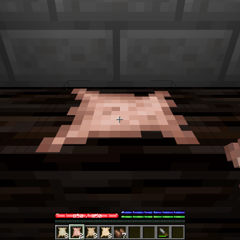
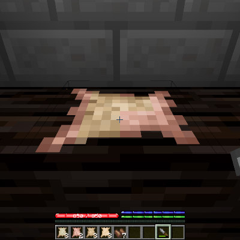

Leatherworking
Leatherworking
皮革是一種由獸皮製成的結實耐用的材料。它可以用來製作皮革盔甲、鞍、以及風箱。獸皮必須經過一系列複雜的工序之後才能變成皮革。首先是浸灰，然後是剖層，接着要脱灰，最後還要浸酸。
獸皮
制皮的第一步自然是得先找到獸皮。世界各地的野生動物都會掉落獸皮。不同的動物掉落的獸皮大小會有所不同。
制皮還需要幾件其他工具：
有了這些工具，你就可以準備開始制皮了！


7200 Ticks
剖層
浸泡好了的皮革還需要剖層，以此來移除皮革上殘留的雜質。將一根原木橫放在地上，然後再將皮革放置在原木上方。接着手持小刀對準皮革的每一個部分按Right Click。已經刮好了的部分會改變其外觀。




皮革完全刮乾淨之後就可以將其從原木上取下了。你應該會得到一塊刮制皮革。

7200 Ticks

2
7200 Ticks